1. Introduction¶
The physical process by which a population of particles evolves over time is governed by a number of probability distributions. For instance, given a particle traveling through some material, there is a probability distribution for the distance it will travel until its next collision (an exponential distribution). Then, when it collides with a nucleus, there is associated probability of undergoing each possible reaction with that nucleus. While the behavior of any single particle is unpredictable, the average behavior of a large population of particles originating from the same source is well defined.
If the probability distributions that govern the transport of a particle are known, the process of single particles randomly streaming and colliding with nuclei can be simulated directly with computers using a technique known as Monte Carlo simulation. If enough particles are simulated this way, the average behavior can be determined to within arbitrarily small statistical error, a fact guaranteed by the central limit theorem. To be more precise, the central limit theorem tells us that the variance of the sample mean of some physical parameter being estimated with Monte Carlo will be inversely proportional to the number of realizations, i.e. the number of particles we simulate:
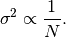
where 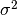 is the variance of the sample mean and  is the
number of realizations.
is the
number of realizations.
1.1. Overview of Program Flow¶
OpenMC performs a Monte Carlo simulation one particle at a time – at no point is more than one particle being tracked on a single program instance. Before any particles are tracked, the problem must be initialized. This involves the following steps:
- Read input files and building data structures for the geometry, materials, tallies, and other associated variables.
- Initialize the pseudorandom number generator.
- Read ACE format cross sections specified in the problem.
- If using a special energy grid treatment such as a union energy grid or lethargy bins, that must be initialized as well.
- In a fixed source problem, source sites are sampled from the specified source. In an eigenvalue problem, source sites are sampled from some initial source distribution or from a source file. The source sites consist of coordinates, a direction, and an energy.
Once initialization is complete, the actual transport simulation can proceed. The life of a single particle will proceed as follows:
The particle’s properties are initialized from a source site previously sampled.
Based on the particle’s coordinates, the current cell in which the particle resides is determined.
The energy-dependent cross sections for the material that the particle is currently in are determined. Note that this includes the total cross section, which is not pre-calculated.
The distance to the nearest boundary of the particle’s cell is determined based on the bounding surfaces to the cell.
The distance to the next collision is sampled. If the total material cross section is 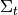, this can be shown to be
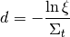
where 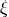 is a pseudorandom number sampled from a uniform distribution on 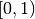.
If the distance to the nearest boundary is less than the distance to the next collision, the particle is moved forward to this boundary. Then, the process is repeated from step 2. If the distance to collision is closer than the distance to the nearest boundary, then the particle will undergo a collision.
The material at the collision site may consist of multiple nuclides. First, the nuclide with which the collision will happen is sampled based on the total cross sections. If the total cross section of material 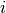 is 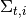, then the probability that any nuclide is sampled is
Once the specific nuclide is sampled, the random samples a reaction for that nuclide based on the microscopic cross sections. If the microscopic cross section for some reaction
is 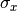 and the total microscopic cross section for the nuclide is 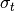, then the probability that reaction
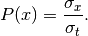
If the sampled reaction is elastic or inelastic scattering, the outgoing energy and angle is sampled from the appropriate distribution. Reactions of type 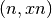 are treated as scattering and the weight of the particle is increased by the multiplicity of the reaction. The particle then continues from step 3. If the reaction is absorption or fission, the particle dies and if necessary, fission sites are created and stored in the fission bank.

After all particles have been simulated, there are a few final tasks that must be performed before the run is finished. This include the following:
- With the accumulated sum and sum of squares for each tally, the sample mean and its variance is calculated.
- All tallies and other results are written to disk.
- If requested, a source file is written to disk.
- All allocatable arrays are deallocated.